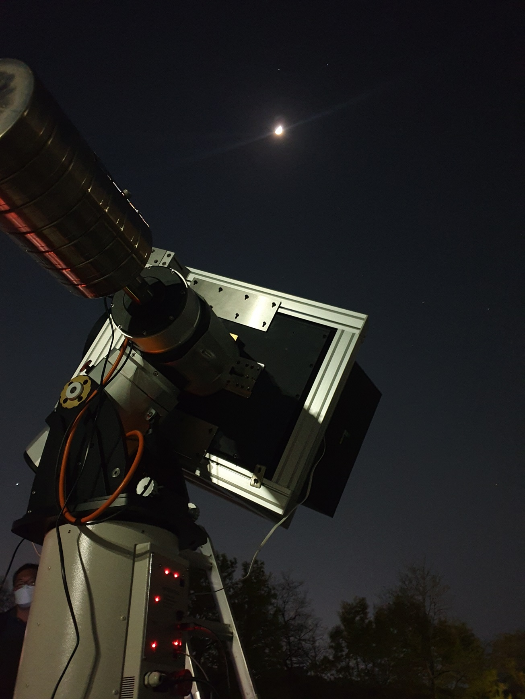
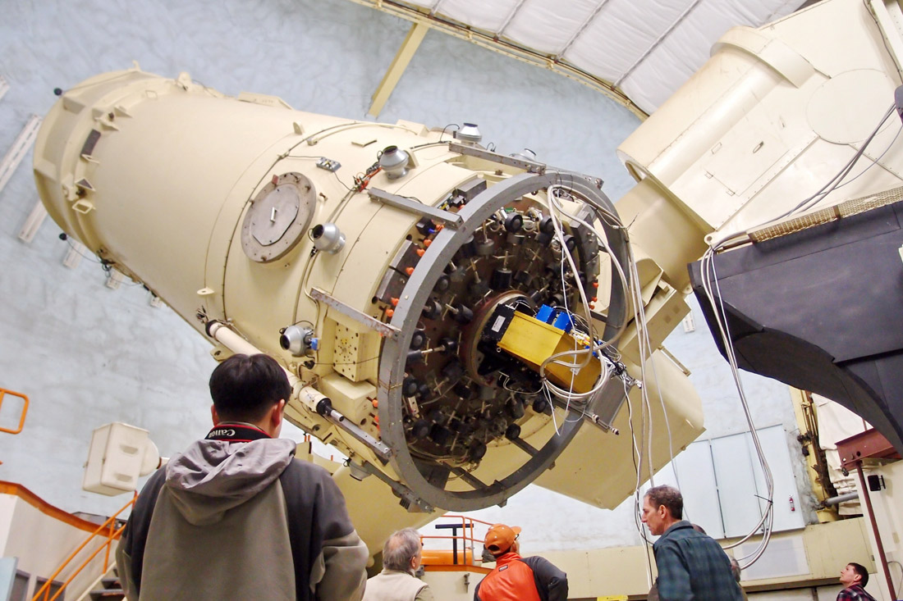

소개
은하진화그룹은 우주에서 어떻게 은하들이 최초로 만들어졌고,
어떻게 진화해왔는지를 다양한 관측 시설과 우주론적 시뮬레이션,
수치 실험, 빅데이터, 인공지능을 활용하여 연구하고 있습니다.

밤하늘의 멋진 은하를 연구하는 방법은 여러 가지가 있습니다. 망원경으로 직접 은하를 관측하여 연구하는 방법, 또는 기본적인 물리법칙을 이용하여 은하의 형성과 진화를 컴퓨터로 시뮬레이션하는 방법이 큰 두 가지 갈래입니다.
은하진화그룹에서는
매우 어두운 은하를 탐색하는데
특화된 광시야 망원경 개발,
매우 많은 은하의 스펙트럼과 거리를 동시에
측정할 수 있는 특수한 분광기
(다천체 분광기), 큰 은하의 넓은 영역을
한꺼번에 관측할 수 있는 3차원(또는
집적) 분광기 등 다양한 기법을 사용하여,
가까운 은하부터 우주 끝자락의 원시은
하까지 폭넓은 연구를 진행하고 있습니다.
